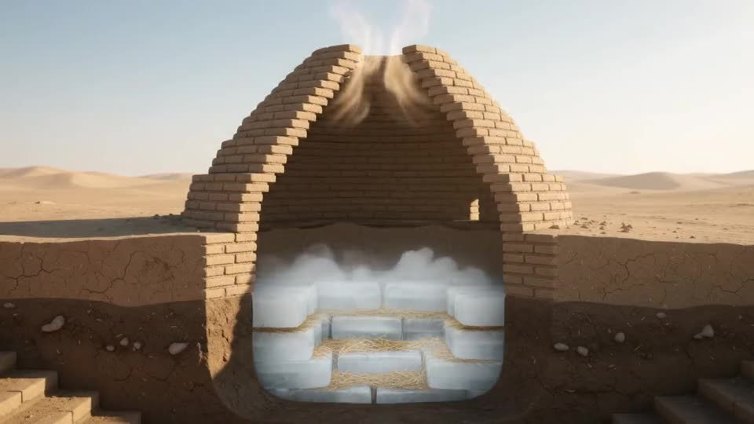
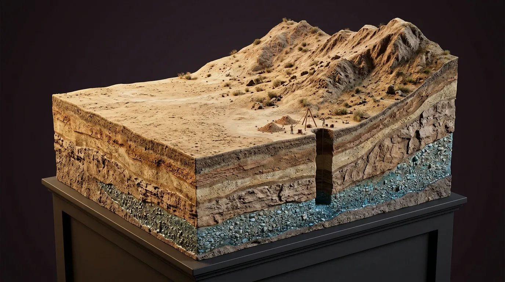

Yakhchal: Cómo Hacían Hielo en Pleno Desierto sin Electricidad
En el desierto iraní, en verano, el termómetro supera con facilidad los 40 grados. Y, sin embargo, durante siglos sus ciudades tuvieron hielo en pleno agosto. No venía de ninguna montaña lejana: se fabricaba y se guardaba allí mismo, en unas construcciones que todavía hoy asombran a los ingenieros. Se llaman yakhchal, literalmente pozos de hielo.
Una cúpula para guardar el frío
Un yakhchal tiene dos partes principales. Arriba, una gran cúpula cónica de adobe que puede superar los diez metros de altura. Abajo, enterrado, un pozo profundo donde se almacenaba el hielo. Los muros de la base eran muy gruesos y se levantaban con un mortero tradicional resistente al agua, que según las descripciones combinaba arena, arcilla, cal, ceniza y fibras.
La forma no es casual. El aire caliente sube y escapa por la parte alta de la cúpula, mientras el aire más frío se queda abajo, junto al hielo. Las paredes de adobe, gruesas y porosas, aíslan del calor exterior. Algunos yakhchal se acompañaban de torres de viento, los badgir, que ayudaban a refrescar el interior.

Fabricar hielo con el cielo del invierno
El hielo se producía en invierno. Junto al yakhchal se construían estanques muy poco profundos, protegidos del sol por un muro alto orientado hacia el sur. Por la noche se inundaban con agua traída por los qanats. En el desierto, las noches de invierno son despejadas y el suelo pierde calor rápidamente hacia el cielo: con temperaturas apenas bajo cero, la fina capa de agua se congelaba.
Al amanecer, los trabajadores rompían el hielo, lo cargaban y lo apilaban en el pozo del yakhchal, separado por capas de paja u otros aislantes. Noche tras noche, durante el invierno, el depósito se llenaba. Al llegar el verano, ese hielo servía para enfriar bebidas, conservar alimentos y preparar postres helados como el faludeh, que todavía se come en Irán.
Antiguos en la idea, más recientes en la piedra
Conviene separar la técnica de los edificios. La idea de guardar hielo en pozos aislados es muy antigua en Persia, pero los yakhchal que se conservan hoy, como los de Kermán, Yazd o Meybod, son en su mayoría de los últimos siglos, sobre todo de época qayar. Son la culminación de una tradición larga, no reliquias de los tiempos de Darío.

Por qué importa
El yakhchal es un ejemplo perfecto de arquitectura pasiva: sin electricidad ni combustible, solo con forma, materiales y el ciclo del clima. Hoy, cuando buscamos maneras de enfriar sin gastar energía, arquitectos de todo el mundo estudian estas cúpulas de barro del desierto. La nevera persa no usaba energía: usaba la física del desierto.
"La nevera persa no usaba energía: usaba la física del desierto."
— Memorias del Pasado
Fuentes y referencias
- Mehdi N. Bahadori, Passive Cooling Systems in Iranian Architecture, Scientific American, 1978
- Organización del Patrimonio Cultural de Irán, inventario de yakhchal históricos
- UNESCO, The Persian Qanat (2016)